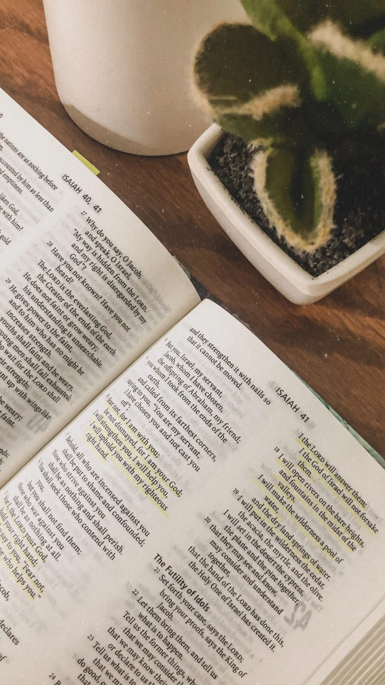

Spiritual Direction
Helping you become aware of the movements, invitations and promptings of God in your life.
Spiritual direction is the art of intentionally journeying with another person in a Spirit-led, free flowing way that fosters trust, safety, vulnerability and honesty with God and self so that you can more fully embrace the love and grace God has for you and in turn manifest that love to others.
Set up an appointment
Do you find yourself asking questions such as:
- “Why, God, do I feel so stuck in my relationship with You…how do I find You?”
- “In what ways are You working in my life and inviting me to be with You that I am not even aware of?”
- “I long for You, Jesus, so how can I experience you in the deep, intimate ways You promise are possible?”
- “Where do I go from here? My relationship with Jesus feels like it has hit a glass ceiling yet I sense there is so much more – what now?”
- “How can I be more aware of God – the one in whom I live, move and have my being…to sense God's presence, to see God's fingerprints on my life?”
- “I am at a crossroads and how do I discern which path to go on?”
These are normal questions which often lead one to the realization that there is something missing in their relationship with God and they are in need of someone to come alongside them as they seek deeper intimacy with God.
Set up an appointmentFAQs
Is spiritual direction for me?
- You desire greater intimacy with God
- You sense the value of having another look at your life and listen to the voice of God with you, helping you to explore and deepen your experiences of God
- You feel stuck in your relationship with God
- A vital relationship with God is important to you
- You are facing a decision in your life
How does spiritual direction differ from pastoral counseling, mentoring, or discipleship?
Spiritual direction differs from pastoral counseling, mentoring, and discipleship in that spiritual direction is not need driven but focuses on the everyday experiences of the directee and the presence of God in those experiences. The agenda is revealed and guided by the Holy Spirit, while the director and directee pay attention to the Spirit's leading and prompting as they talk together. The goal is for the directee to grow in experiential knowledge of God and self. The role of the director is to provide a safe, caring environment, as well as to truly ‘be’ with and listen to the directee and to help the directee explore and sit with what God is offering. The focus of spiritual direction is not teaching or problem-solving.
What does a spiritual direction session look like?
A spiritual direction session is a specific time when a director and directee meet together, typically for an hour. The meetings are held in any quiet setting where focused conversation and prayer can take place. Sessions are usually scheduled for once every three to four weeks.